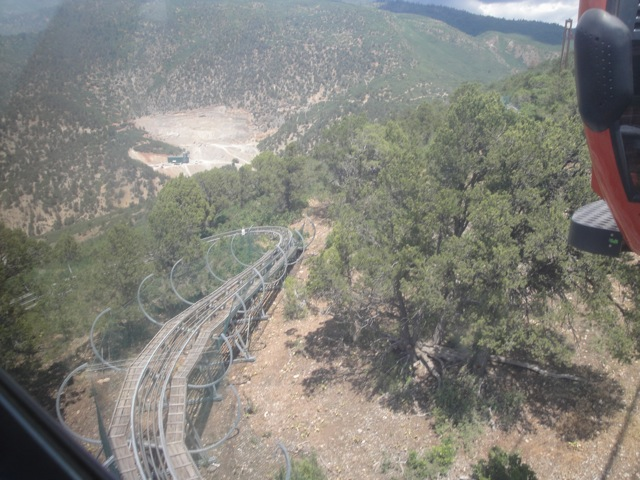
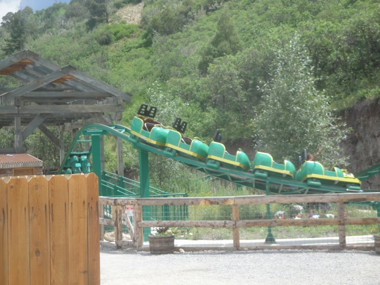
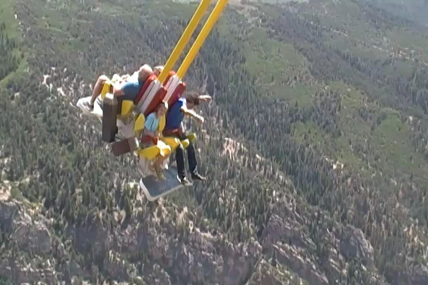

| |
Texas/Rocky Mtn Road Trip
Las Vegas/Castles'N'Coasters Six Flags Fiesta Texas Schlitterbahn
Sea World San Antonio Gavelston Pier
Six Flags Over Texas Silver Dollar City Frontier City Colorado Elitch Gardens
Lakeside Park
Glenwood Springs
 Sadly, the time has come. We have reached the last day of the trip. Now this wasn't a big park day (we did hit a park though). This was mostly just a day for us to explore Glenwood Springs and check out Western Colorado.
Sadly, the time has come. We have reached the last day of the trip. Now this wasn't a big park day (we did hit a park though). This was mostly just a day for us to explore Glenwood Springs and check out Western Colorado.
The grass is greener in Colorado. No really!! It is!!! Look at it!!!
We saw this place while driving on the freeway, and we just had to stop.
 Hmm. So thats where we ended up pulling over.
Hmm. So thats where we ended up pulling over.
Hey!! I know where they're talking about and have been there before. =)
This place is a popular ski resort in the winter, and I can see why. This place is beautiful enough in the summer. I'd love to see the place draped in snow.
Its like a little chunk of Europe that they just plopped into Colorado.
Hey, we may not have been out in the freezing snow skiing, but we can still go out for Starbucks afterwords.
Time to head on over to Glenwood Springs.
And this is where the entire state starts to look like Tar Creek.
Colorado is f*cking beautiful!!
TAKE THE TUNNEL!!!!
I could just drive aimlessly in Colorado and still call it a good day.
Hey, you can't get enough of these Tar Creek Colorado shots.
Ahh. It looks so nice and peaceful. I'm sure nothing will happen if I just pop in real quickly.
Time to hike on up to Hanging Lake.
No Dogs Allowed.
Dammit!!! Who left the water running!!!
Well, we made it to Hanging Lake.
They have a log you can walk on to get a better view.
Its a shame that you can't go in the water here (the oil from your skin would f*ck up the Ecosystem) as this looks like a good cliff jumping spot.
 Oh, and you can also hike up to the very top of the Hanging Lake.
Oh, and you can also hike up to the very top of the Hanging Lake.
We made it!!! We finally reached the backside of water!!!
SQUIRREL!!!!
"Hey Cody!! We don't need to book it all the way back to Ventura. We can just stay here!!!"
On the road again. On the road again. I can't wait to get on the road again.
Next stop, the Glenwood Caverns Adventure Park.
Come on. Take the cable car all the way up to the theme park.
View from the cable car ride.
I keep trying to feed the bears, but they won't open their mouths!!
Dammit! Main roller coaster closed. Oh well.
Hey, its only a Hurricane clone.
 Please tell me this thing goes down the entire mountain.
Please tell me this thing goes down the entire mountain.
All right. Time for the star attraction of the park. The Alpine Coaster.
It was fun, but the one at Fort Fun was better.

We really need more Alpine Coasters built. These things are awesome.

Insert "Kevin is a credit whore" joke here.
 Ok. This easily takes the award for best ride location ever.
Ok. This easily takes the award for best ride location ever.

"Hello Glenwood Springs!!!"
Next up, we stopped at the Glenwood Hot Springs. Not a big fan of pools, but this place was pretty cool.
My attempts at doing flips on the diving board were called one of the most entertaining things ever.
 Don't look into the light!!!
Don't look into the light!!!
We planned on climbing Mt. Garfield afterwords, but we couldn't find decent parking.
There's something about the dirt as these giant tiles that I really like.
Gee. I wonder why all the deer are trying to avoid us?
And in Grand Junction, I ended up hitting some debris that ruined my splash guard (luckily, those are easy to fix). But yeah. The drive back was a real pain cause of that, and the fact that 70 freeway was cluttered with crap. I ran over several mice, a snake, had to swerve to avoid a tire, and a taxadermied owl. I much prefered the original suicide night to San Antonio. And yeah. That was the Texas/Rocky Mtn Road Trip, the first real major road trip we've done as Incrediblecoasters. It was definetly choppier and with more f*ck up moments than trips where its organized by someone else. But overall, I'd call it a great success. We hit up a ton of stuff, got on a ton of rides including all of the Rocky Mtn Coasters, hit up 7 states, really explored into Couchsurfing, can prove to everyone who doubted that I could do this that I did, and have mastered the art of the Suicide Night (they were MUCH better here, than on our first trip, Glass Beach). Plus, we did all this at a price of approximately $800. So yeah. We'll definetly be doing more road trips in the future and are totally satisfied with how the Texas/Rocky Mtn Road Trip turned out (Ok, yeah. There are definetly ways to improve for next time, but this was our first major road trip, and it was awesome).
Home
|